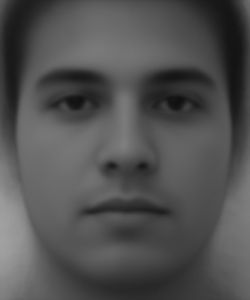
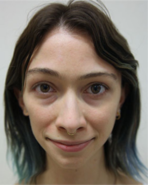

Image of myself
CS 194 Project 4
Face Morphing
By Stephanie Claudino Daffara
This assignment explored morphing animation between images' corresponding points, computing the mean between images, and playing around a bit with caricatures.
The Morph Sequence
In order to compute a morph between image A and image B, first we must find a "Mid-Face". This image is a half-way mix between two images. In order to create it I had to find the mid points between the two images' correspondence points and compute triangulation. I used scipy's Delaunay function to compute the triangulations. Then for each point in each triangulation in each image, I computed the barycentric coordinates in respect to the mid-face triangles and used those to linearly interpolate the corresponding points in image A and image B. Finally, in order to account for points that are not integers, I used scipy's interpolate function to find the best integer pixel value from both image A and image B. Finally I added the corresponding pixel values between image A and image B and averaged them to get a final mean result.
Here is a mid-face morph between Adrien Brody, photographed by Martin Shoeller, and an image of myself.
Next I worked on creating a morph sequence between two images. This was simply executing the morph
function I wrote for the mid-face above, except that now I use a warp constant that goes from 1 to
0 incrementing in steps of 1/(frames / second). Some results I got are shown below.

I thought it would be fun to experiment on showing someone throughout time (in this case myself). So the first image is a picture of me when I was a kid, and the second picture is an image of me now. The result is kind of like a time-lapse!
Avoiding For loops
In the class slides this morph function is said to need two for loops. Prof. Efros mentioned in class that if you could do it in a single for-loop he would give extra points. Well, I made it my goal to vectorize the #$%@ out of my morph function, and by using numpy the way its meant to be used, I achieved morphing my images using no for loops at all! Both images and every thing done to either is done at the same time. The same goes for the mean face below. I will talk about it and show some results soon, but keep in mind that the average of each face is done all concurrently.
The Mean Face
The task for this part of the project was to select a face dataset with attributes and use it to compute a "mean" face. Being Brazilian, I naturally used FEI Face Database. Below you can see the results for the generic mean face, the male mean face, and the female mean face.

Just for fun I decided to also calculate the mean face between my siblings and I (all brazilian too).
Caricatures
Here I played around a bit to see how "off" my own face is from my people! I used the female brazilian mean face to try and get more accurate images. The results are pretty funny, which just shows how diverse us Brazilians really are. The warping factor below is how much I applied to my face, and (1 - warping) is how much I applied to the mean face.
In the images below you can see me playing around with extrapolating the warping constant to above and below zero.

Class Morph
This is a class warp that I participated in! We each worked on a little chunk of it (from the person before us morphed into ourselves).
❤